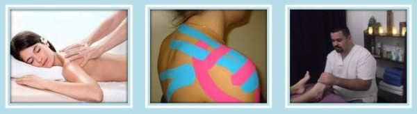
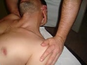
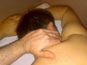
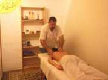
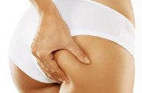

Diferentes aplicaciones del quiromasaje
Quiromasaje general
Cuando nuestros músculos se encuentran tensos o han sido sometidos a demasiado esfuerzo, acumulan sustancias de desecho que causan dolor, rigidez e incluso, espasmos musculares. Al incrementar la circulación, hacia y desde los músculos, el masaje acelera la eliminación de estas sustancias tóxicas y dañinas. El quiromasaje facilita la llegada de sangre y oxígeno fresco a los tejidos, con lo que se aligera el proceso de recuperación de lesiones y de numerosas enfermedades.
El quiromasaje es efectivo como medio para aliviar dolores de cabeza, causados por la tensión nerviosa y dolores musculares de espalda, así como para mejorar la condición de la piel. Empleamos técnicas para tratar distintas afecciones musculares y nerviosas como tensiones musculares en general, artrosis, lumbago, ciática, tortícolis, esguinces, tendinitis, etc. Con unas pocas sesiones (dependiendo de los casos), se tratan con unos excelentes resultados.
Quiromasaje terapéutico
Se trata de un conjunto de maniobras que se llevan a cabo de manera metódica sobre un área especifica del organismo, aplicando estiramientos y compresiones rítmicas. Los masajes terapeuticos se consideran una terapéutica pasiva, ya que el paciente es quien se deja manipular mientas entra en un estado de relajación y es importante tener en cuenta que los objetivos de estas técnicas, además de terapéuticos, suelen ser también preventivos. Por otro lado debemos destacar que, en la actualidad, los masajes terapéuticos han llegado a alcanzar un lugar privilegiado en la rama de la medicina que se dedica a la prevención y rehabilitación.
Quiromasaje relajante
Su finalidad particular es ofrecer al cuerpo un estado de paz y estabilidad emocional y física por medio de los masajes apropiados. Para estas épocas de tantas preocupaciones e inseguridades, tienen cada vez mayor importancia. Una de las intenciones iniciales de esta clase de masajes es relajar el músculo, pero desde luego con los masajes (y además de ello) se obtendrán otras consecuencias, como mejorar la circulación sanguínea, bajar y equilibrar la presión, calmar el estado de ansiedad y despejar la mente de pensamientos negativos.
Contracturas musculares
Una contractura muscular es, tal y como su nombre indica, una contracción continuada e involuntaria del músculo o algunas de sus fibras que aparece al realizar un esfuerzo. Se manifiesta como un abultamiento de la zona, que implica dolor y alteración del normal funcionamiento del músculo. El masaje provocará un aumento del flujo sanguíneo que mejora la recuperación de tejidos y limpieza de metabolitos además de propiciar una relajación del músculo, reduciendo la tensión y por tanto el dolor.
Cefaleas
La excesiva contracción de los músculos de la cara, el cuello y los que se encuentran bajo el cuero cabelludo provocan dolores de cabeza por tensión. Éstos son muy comunes y sus causas más frecuentes son el estrés, la ansiedad, los estados depresivos o adoptar una mala postura. Un masaje te ayudará a aliviarlos ya que lograremos descontracturar los musculos.
Insomnio
Insomnio o incapacidad de dormir es un mal cada vez más frecuente, muchas veces causado por el estrés o las preocupaciones de nuestro ajetreado día a día. El masaje es una buena terapia para combatirlo, ya que ayuda a relajar el cuerpo y, a través del mismo, a desconectar el pensamiento y centrar la energía.
Estreñimiento

Realizar masajes en la zona abdominal es una buena forma de tonificar los músculos en el área intestinal. hacerlo regularmente, fortalece las paredes intestinales y contribuye a liberar las heces estancadas que están causando estrenimiento, es posible que en una o dos semanas consigas deshacerte por completo del problema. Los masajes regulares pueden ofrecer grandes beneficios al intestino y a los órganos que lo rodean.
Artritis
La artritis es una enfermedad debilitante que afecta las articulaciones en el cuerpo. Esta es una enfermedad común entre adultos que se asocia con síntomas como dolor persistente e inflamación incesante. Es posible obtener algún alivio a través de masajes de cuerpo y es sólo uno entre los muchos problemas que un cuerpo humano se enfrenta a medida que envejece. La artritis es una temible enfermedad de las articulaciones del cuerpo. Un buen masaje puede promover la relajación y reducir la hinchazón y rigidez en las articulaciones significativamente mediante la manipulación de los tejidos y músculos debajo de la piel. Masajes pueden ejecutarse de forma diferente en función al movimiento y la tensión necesaria. El masaje es una terapia que se realiza en la zona afectada por la enfermedad con presiónes, con las manos del experto que da el masaje. Beneficios del quiromasaje en la artritis, reduce la inflamacion, disminuye deformidades y alivia el dolor.
Celulitis

Los masajes en la zona afectada son otra opción a la hora de reducir la celulitis. Estos pueden ayudar a mejorar la circulación, hacer que la piel luzca mejor, favorecer la relajación del cuerpo, tonificar los músculos y eliminar las grasas acumuladas. Sin embargo al igual que ocurre con las dietas es poco probable que solo aplicando masajes se logre erradicar la celulitis, aunque si pueden ser útiles para prevenir su aparición. Lo conveniente seria combinar los masajes con alguna alguna crema anticelulítica, ya que el masaje ayudará a su absorción y distribución y así se obtendrá mejores resultados.